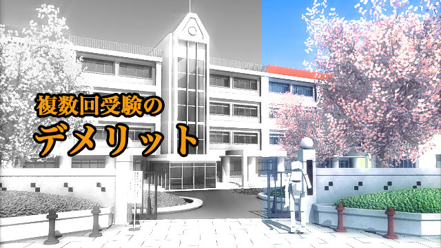

只今受験戦線まっ盛り！ 中学受験から大学受験に至るまで全国の受験生とその親は苦しい戦いの最中ではないでしょうか。
我が家でも高校受験中の息子がいるため、何かと落ち着かない日々を過ごしています。
親としては（子どもも）ナントカ早く終わってくれないかなという心境なのですが、戦いはまだまだ続きそうです（汗）
もうどこでもいいから早く決まって欲しい（笑）
私など無責任にそう感じてしまいますが、やはり多くの親は何とか我が子に合格して欲しい思いでいっぱいなのでしょうね。
さて、そんな親と受験生にとっては厳しくも辛い受験ですが、実は多くの私立校にとって「受験」はなかなか美味しいイベントだと言えばどう感じるでしょうか。
美味しいという言葉を使う理由は、下世話な言い方ですが「受験」は学校にとって「カキイレどき」といえるからです。
私立にとって受験料収入は馬鹿にならない金銭流入になるのです。
たとえば高校などでもその額は数千万から億単位になります。
大学になればそれは膨大な金額となるでしょう。
いきなりお金の話になって恐縮ですが、私がお話ししたいのは私立の「戦略」についてです。
複数回受験は学校の戦略
ご存知の方もいると思いますが、いま多くの私立高校では受験機会を1回だけでなく複数回設けています。中には3回受けてもよいというところもあります。
受験機会（回数）が増えるのは一見受験生にとって有利になるようですが、必ずしもそうではありません。何回受けても落ちる子は落ちます。
学校側は説明会などで複数回受けることをすすめますがそれは要注意。
中には複数回受けると有利に扱うかのような「配慮」をそれとなく匂わすところもありますが、実際はそんなことはないのです。
ではなぜ複数回も受験できる体制を整えているのか？
それはズバリ受験生の確保と金銭的利益です。
ご存知のように、いま日本は少子化に歯止めがかかりません。毎年のように受験生数は減少の一途をたどっています。
特に高校受験生の数は、中学受験の増加などにより減る一方です。
多くの私立にとって実は入学者もさることながら受験生の確保が死活問題となっています。
どこかが増えればどこかが減る。一部の有名高校以外はどこも生徒集めに必死です。前年度より受験生が減れば受験料収入も減り、また広報担当の先生の責任問題にまで発展するのです。
近隣の私立同士の競争も激しく、もしどこかの学校が「受験者減」ということになれば周囲から「敗北」のレッテルが貼られかねないのです。
そこで登場したのが受験機会の複数回化です。
これは「受験生のためにチャンスを増やす」という名目のもと、1回だけでは生徒の獲得競争に自信をもてない私立高校の苦肉の策であり、かつ受験料収入の確保という意味で二重にオイシイ戦略です。そういう意味では学校が編み出した「商品」です。
しかしこの制度、受験生にとってはトンデモなく負担を強いられるものです。
私は塾講師時代、同じ学校を3回受け（させられ）て3回とも不合格になった生徒を見て、やり切れない憤りを覚えたものです。
何回受けても受かる子は受かるが、受からない子は受からない。この制度が導入された当初は、学校側の巧みな戦略によって多くの親、受験生が複数回受ければ合格しやすくなると思い込んでいたのです。
現在もこのような勘違いは受験生の中に存在しています。
非常に罪な制度だと思います。
人気校は受験機会を1回にすべき
もちろん複数回受けることでメリットを享受する子もいるでしょう。1回目は体調不良などで実力を発揮できなかった子が、2回目の受験では本領発揮できたという場合です。
しかし、これも実力が本来備わっている子に限る話であって、実力はないが何回も受ける事で温情的に合格させてもらえるということはないのです。
学校側の仕掛ける「戦略」にウマウマ乗せられてしまうことのないよう気をつけたいものです。
一方学校に目を移せば、先述の通りどの学校も「生き残り」に向けて必死だという事情が見えてきます。
私は学校関係者と話す機会が多いので、その必死さがこちらにもヒシヒシと伝わってくるのです。
その一端を示す実例に出会いました。
先日ある私立校の広報担当者に「定員を確保しさえすれば受験者の減少はあまり関係ないのでは……」というと、彼は「イヤ、受験者が減ったら他校からアソコは人気が落ちたとすぐ広められる」と語気を強めて答えました。さらに……
前年より絶対減っては行けない理由として「100人減ればそれだけ受験料収入も減り、何人かの教師をやめさせなければならなくなる。」
だから広報担当としてはそれだけは絶対に避けなければならないのだと。
何とも凄まじいサバイバル競争ですが、受験はまさに学校にとっても一年に一度の大勝負、負けるわけにはいかないということでしょう。
ただ、私は中堅以下の私立が存続をかけて生徒集めに知恵を絞ることが悪だとは思いません。私も塾の経営者だった経験からその思いは理解できるからです。
私が納得できないのは、ソコソコ偏差値も高く生徒集めにもあまり困っていない私立までもが複数回受験を設け大量の受験者を集めること、当然ながら大量の不合格者を出していることです。
何度もエサをぶら下げられ受験させられる生徒にとってこれはたまったものではありません。肉体的にも心理的にも彼ら受験生が被るダメージは決して小さくないのだということを私は訴えたいと思います。優秀な生徒を集めることができるのに何回も受験させる理由は、金銭的利益以外に考えられません。
これら人気校は1回だけの受験に戻すべきです。教育機関としての矜持（きょうじ）と良心を早く取り戻すべきではないでしょうか。
選ばれる立場から選ぶ者へ
少子化による生徒獲得競争は、私立だけでなく公立にも及んでいます。近年の都立高校や県立高校における中学校併設の動き、そして前期後期制による複数回受験の導入がそうです。
今や「生徒確保」を巡って公立私立入り乱れてのなりふり構わぬ競争に突入したといえるでしょう。
この学校による「生徒獲得競争」に対して受験生と親はどうあるべきでしょうか。
それは一つには、家庭においてもきちんとした受験戦略を立てるべきということです。
戦略といっても受験勉強の技術ではなく志望校選定の際の規準を明確にし、いったん決めたらブレないということです。
説明会などでのオイシい話に惑わされることなく、学校の方針と特徴それらが我が子に合っているかどうか見定めることが大切です。
偏差値や大学合格数の数値は、学校の良し悪しの規準ではないことを知りましょう。
塾や先輩、通わせている親からの情報も大切です。
その上で第1志望（目標校）～第4志望（すべり止め校）までを決め、やたら同一校を複数回受けるという負担は避けた方がよいでしょう。
そしてもう一つ大事なこと。
それはここまでの話でお分かりの通り、少子化によって生徒を何よりも欲しがっているのは「学校のほうだ」ということを理解して下さい。
受験する側は（親も含めて）どうしても審査される側として弱い立場になってしまいがちです。
学校は生徒に来てもらいたいのが本音だということ。だから「行ってやる！」という立場にシフトしましょう。
「そんなこといっても合否を決めるのはアッチ（学校）だ！」
もちろんそうですが、いまは人気にアグラをかいている学校でも、生徒の確保はもう現実問題として迫っていることを受験者側が認識できれば、余裕のある態度で臨むことができます。
受験生、そして親の皆さん。「どうか合格させて下さい」という受け身の姿勢ではなく「受験してやる！」という気持ちで望んで下さい。
たとえ万一不合格になったとしても、それが何でしょう。学校（相手）の都合でそうなっただけです。
選ばれる立場から選ぶ者へとシフトすること。堂々と臆することなく受験に臨んでいただきたい。
それが受験生＆親の皆さんへ私が今回伝えたかったメッセージです。